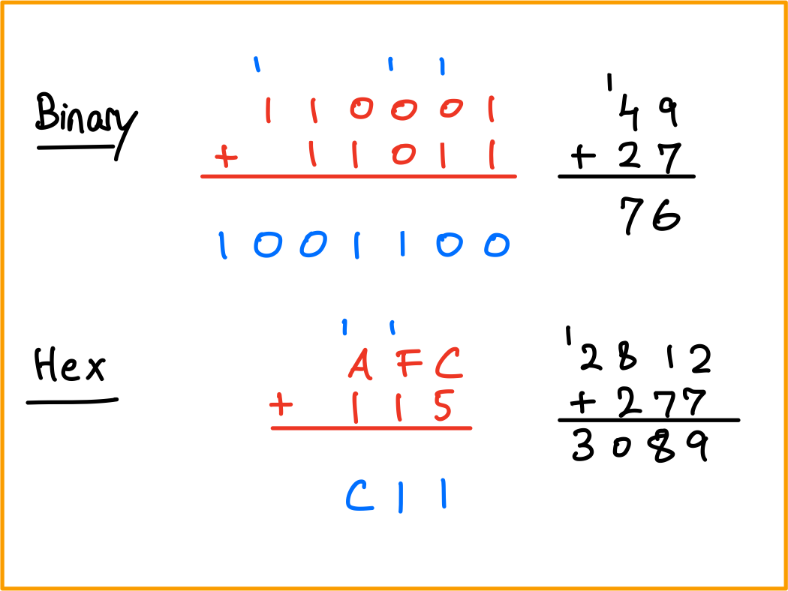
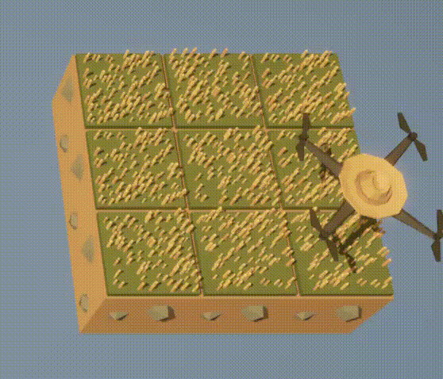
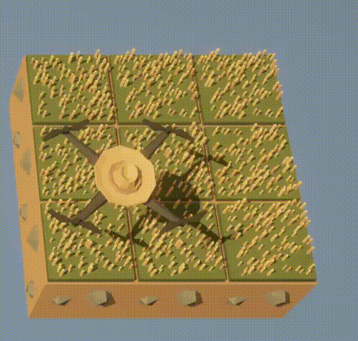

HW 2 Solutions
ENGR 21, Fall 2026.
Solutions
1 Converting between number systems
1.1 from Decimal to Binary
100TipAnswer0b11001001029TipAnswer0b10000000101476TipAnswer0b111011100\(1.4 \times 10^{3}\)
TipAnswer0b10101111000
1.2 from Binary to Decimal
0b1011011TipAnswer\(91\)
0b110010101TipAnswer\(405\)
0b1000000001TipAnswer\(513\)
0b10111TipAnswer\(23\)
1.3 from Decimal to Hexadecimal
1000TipAnswer0x3E8176TipAnswer0xB042678TipAnswer0xA6B681TipAnswer0x51
1.4 from Hexadecimal to Decimal
0x14E3TipAnswer\(5,347\)
0xA10BTipAnswer\(41,227\)
0x1000TipAnswer\(4,096\)
0x1010TipAnswer\(4,112\)
2 Base systems
2.1 A new base: 7
Write down all numbers from 1 to 16 in base 7.
TipSolutionThe numbers from one to sixteen in base 7 will be: \(\{1,2,3,4,5,6,\}\) followed by the number \(10\), which equals seven, and then \(11\), which equals eight, and so on. In base 7, the sequence would be \[\{1,2,3,4,5,6,10,11,12,13,14,15,16,20,21,22\}\]
In base 7, what is the meaning of the symbol
66? Explain.TipSolutionIn base 7, this would need to be interpreted as follows. \[6 \times 7^0 + 6 \times 7^1 = 6_{10} + 42_{10} = 48_{10}\] Therefore, the symbol
66in base 7 corresponds to the number forty-eight.What is the largest possible four-‘digit’ number in base 7? Write the number in words, in decimal form, and in base-7 form.
TipSolutionThe largest possible four-‘digit’ number in base 7 is \(6666_7\). In decimal form, this would be \[6 \times 7^0 + 6 \times 7^1 + 6 \times 7^2 + 6 \times 7^3 = 6_{10} + 42_{10} + 294_{10} + 2058_{10} = 2400_{10}.\] In words, it is the number two thousand four hundred.
2.2 Addition of binary and hexadecimal numbers
In grade school, you learned how to add two multi-digit numbers by hand. In case, you’ve forgotten, here’s a video explaining this to elementary school students.
Your task in this problem is to carry out multi-‘digit’ addition, by hand, to binary and hexadecimal numbers. In the process, you will see the concept of ‘carrying over’ a digit (perhaps you learned the term ‘regrouping’) applies to numbers other than base ten.
As an example, the following sums have been computed for you below.
0b110001+0b110110xAFC+0x115

2.3 Hex
0xE5A+0x85ATipAnswer\(5812\) in decimal form and
0x16B4in hexadecimal form0xEE+0x99TipAnswer\(391\) in decimal form and
0x187in hexadecimal form0x100+0x20TipAnswer\(288\) in decimal form and
0x120in hexadecimal form0xB0+0xBTipAnswer\(187\) in decimal form and
0xBBin hexadecimal form
2.4 Binary
0b1011011+0b11011001TipAnswer\(308\) in decimal form and
0b100110100in hexadecimal form0b10011+0b100110001TipAnswer\(324\) in decimal form and
0b101000100in hexadecimal form0b10000000000+0b1011111TipAnswer\(1119\) in decimal form and
0b10001011111in hexadecimal form0b11010001001+0b110110110TipAnswer\(2111\) in decimal form and
0b100000111111in hexadecimal form
3 Conditionals and loops
3.1 Counter variables
Consider the following program, which counts the number of times pin A7 has been tapped and assigns color1 to pixel number k, where k is the number of times pin A7 has been tapped. The code crashes if pin A7 is touched more than 10 times.
from adafruit_circuitplayground.express import cpx
import time
off = (0,0,0)
color1 = (10,30,10)
color2 = (30,10,10)
cpx.pixels.fill(off)
k = -1
while True:
time.sleep(0.2)
if cpx.touch_A7:
k += 1
cpx.pixels[k] = color1
cpx.pixels[k-1] = offModify this code so that it has the same behavior for up to 10 taps, but for taps 11 through 20, a different color is assigned to the pth pixel, where p is k-10. Your code will still fail after the 21st tap is detected; that’s fine.
from adafruit_circuitplayground.express import cpx
import time
off = (0,0,0)
color1 = (10,30,10)
color2 = (30,10,10)
cpx.pixels.fill(off)
k = -1
while True:
time.sleep(0.2)
if cpx.touch_A7:
k += 1
if k < 10:
cpx.pixels[k] = color1
cpx.pixels[k-1] = off
elif k < 20:
cpx.pixels[k % 10] = color2
cpx.pixels[(k % 10)-1] = off3.2 The continue keyword
The following progam was written with the intention of printing all numbers except for 9. However, the program currently fails at doing this. What one change will ensure that printing ‘9’ is skipped? Turn in the new code.
import time
k = 0
while True:
time.sleep(0.5)
k += 1
print(k)
if k == 9:
continueimport time
k = 0
while True:
time.sleep(0.5)
k += 1
if k == 9:
continue
print(k)3.3 The break keyword
In class, we saw that the following code allows us to terminate the inner while loop by touching pin A2.
from adafruit_circuitplayground.express import cpx
import time
k = 0
while True:
time.sleep(1)
k += 1
print(f"Outer iteration {k}")
if k % 3 == 0: # k ÷ 3 has remainder 0
m = 0
while True:
time.sleep(1)
m += 1
print(f"Outer iteration {k}, inner iteration {m} ")
if cpx.touch_A2:
print("terminating")
breakChange the code above so that it meets the following requirements:
- Touching A2 while in the inner loop should terminate inner loop.
- Touching A2 while in the outer loop should not do anything.
- Touching A7 alone while in the inner loop should now also terminate inner loop.
- Touching A7 while pressing button B while in the outer loop should terminate the outer loop.
from adafruit_circuitplayground.express import cpx
import time
counter1 = 0
while True:
time.sleep(1)
counter1 += 1
print(f"Outer iteration {counter1}")
if counter1 % 3 == 0: # k ÷ 3 has remainder 0
counter2 = 0
while True:
time.sleep(1)
counter2 += 1
print(f"Outer iteration {counter1}, inner iteration {counter2}")
if cpx.touch_A2:
print("terminating inner loop")
break
elif cpx.touch_A7 and cpx.button_b:
print("terminating inner loop")
break
elif cpx.touch_A7:
print("terminating inner loop")
break
if cpx.touch_A7 and cpx.button_b:
print("terminating outer loop")
break3.4 The time functions
The function time.monotonic() can be used to measure intervals of time. For example, the following code measures how long after the red LED comes on the user presses button B.
from adafruit_circuitplayground.express import cpx
import time
cpx.red_led = True
start_time = time.monotonic()
while True:
time.sleep(0.01)
if cpx.button_b:
end_time = time.monotonic()
interval = end_time - start_time
break
print(f"Interval was {interval} seconds")Rewrite the code above so that it executes the same functionality without using break or if.
from adafruit_circuitplayground.express import cpx
import time
cpx.red_led = True
start_time = time.monotonic()
while not cpx.button_b:
time.sleep(0.01)
end_time = time.monotonic()
interval = end_time - start_time
print(f"Interval was {interval} seconds")4 The Farmer Was Replaced
For this part of the assignment, you will have to make progress on the game The Farmer Was Replaced. You will be provided a gift card for the game soon.
Start a new game and complete the following tasks in order. Only the marked tasks require a submission; those that are not in bold are not associated with any submission.
It is important that you avoid unlocking any options other than the ones explicitly listed. If you accidentally unlock more features, you should re-start the game.
Harvest (grass) five times
Unlock
whileUse the
whileloop to harvest 200 units of hay.☞ Describe, in words, what the drone does using each of these snippets of code.
Option 1
while True: do_a_flip() while True: harvest()TipAnswerDrone does one flip, and after that continues harvesting for ever.
Option 2
while True: harvest() while True: do_a_flip()TipAnswerDrone harvests once, then does flips for ever.
Option 3
while True: harvest() do_a_flip()TipAnswerDrone harvests and flips in turn until the end of time.
Option 4
while True: do_a_flip() harvest()TipAnswerDrone harvests and flips in turn until the end of time, but starts with a flip instead of a harvest.
Option 5
while True: do_a_flip() harvest()TipAnswerDrone does flips for ever, never harvests.
Option 6
while True: harvest() do_a_flip()TipAnswerDrone harvests for ever, never does a flip.
Unlock speed (1/5 only)
☞ Write code that executes a flip if a harvest isn’t available, and harvests if possible.
TipAnswerThe following code does the trick.
if can_harvest(): harvest() else: do_a_flip()☞ Explain why, after unlocking speed, the following code no longer works.
while True: harvest()TipAnswerBecause there is not enough time for the grass to grow before it is harvested.
Unlock bush planting
☞ Write a program that causes the drone to keep doing flips as it waits for bushes to grow, and harvests them when they’re ready to be harvested. It immediately plants a bush once it is done harvesting.
TipAnswerThe following code does the trick.
while True: if can_harvest(): harvest() plant(Entities.Bush) else: do_a_flip()Expand the farm. It should now be size 3 x 1.
☞ Describe in words what the following code does.
while True: if can_harvest(): harvest() plant(Entities.Bush) else: move(North)TipAnswerThis plants bushes on the entire 3 x 1 farm continuously, harvesting them as they grow.
☞ We would like to write a program that makes good use of our agricultural resources by planting bushes on two of the plots and grass on the middle plot. It may be helpful to use the following snippet of code for this purpose.
clear() plant(Entities.Bush) move(North) move(North) plant(Entities.Bush) move(North)Taking inspiration from the above code if necessary, write a script that, when run, continuously plants bushes on the two outer plots, allows grass to grow on the middle spot, and harvests all three plots one by one for ever. The first line in your code should be
clear()TipSolutionThe following code does the trick.
clear() while(True): if can_harvest(): # Plant bush and harvest harvest() plant(Entities.Bush) move(North) # Harvest grass. grows automatically harvest() move(North) # Plant bush and harvest harvest() plant(Entities.Bush) move(North)Unlock carrots.
Expand the farm one more time, getting to a 3 x 3 size.
☞ Without using
forloops, achieve the functionality shown by the following gif. It is possible to do so using just 9 lines of code. The first line should beclear().
TipSolutionThe following code does the trick.
clear() while True: till() move(East) till() move(East) till() move(East) move(North)☞ The following code, when executed, produces the functionality shown in the gif below.
clear() till() move(East) till() move(East) till() move(East) while True: # First row if can_harvest(): harvest() plant(Entities.Carrot) move(East) if can_harvest(): harvest() plant(Entities.Carrot) move(East) if can_harvest(): harvest() plant(Entities.Carrot) move(East) move(North) # Second row: Grass if can_harvest(): harvest() move(East) if can_harvest(): harvest() move(East) if can_harvest(): harvest() move(East) move(North) # Third row if can_harvest(): harvest() plant(Entities.Bush) move(East) if can_harvest(): harvest() plant(Entities.Bush) move(East) if can_harvest(): harvest() plant(Entities.Bush) move(East) move(North)
Modify the above code so that carrots are in the middle row and grass in the bottom row. The bushes should still be in the top row.
TipSolutionclear() move(North) till() move(East) till() move(East) till() move(East) move(South) while True: # First row: Grass if can_harvest(): harvest() move(East) if can_harvest(): harvest() move(East) if can_harvest(): harvest() move(East) move(North) # Second row: Carrots if can_harvest(): harvest() plant(Entities.Carrot) move(East) if can_harvest(): harvest() plant(Entities.Carrot) move(East) if can_harvest(): harvest() plant(Entities.Carrot) move(East) move(North) # Third row if can_harvest(): harvest() plant(Entities.Bush) move(East) if can_harvest(): harvest() plant(Entities.Bush) move(East) if can_harvest(): harvest() plant(Entities.Bush) move(East) move(North)